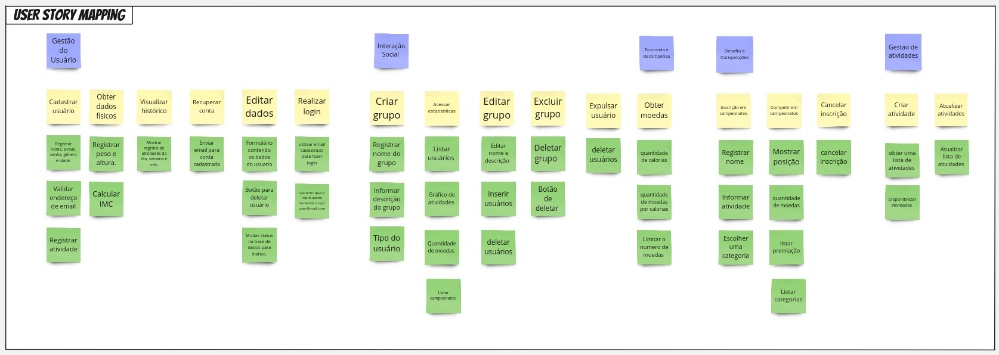

Missão 3
Apresentação Unidade 3
Product Backlog Building (PBB)
O Product Backlog Building (PBB) é um método utilizado para criar e elaborar um Product Backlog de forma colaborativa. O Canvas PBB é uma ferramenta que facilita esse processo. O principal objetivo do PBB é auxiliar na construção e refinamento do Product Backlog, garantindo um entendimento compartilhado do produto entre todos os envolvidos e preparando o backlog para que a equipe possa iniciar o trabalho de forma ágil e eficiente.
O PBB é realizado através de uma dinâmica prática, onde todos os participantes do projeto se envolvem na criação de um backlog eficaz e colaborativo. Essa dinâmica ajuda a esclarecer as histórias de usuário e a organizar o backlog dos times, utilizando o Canvas PBB como uma ferramenta de facilitação.
Como parte de uma atividade proposta pelo professora Critiane, criamos um PBB para o nosso projeto, o RPGym. Utilizamos esse estudo de forma prática para aprender a planejar e estruturar uma solução de forma organizada e colaborativa.
MIRO com o PBB feito pela Centelha da Revolução
Retirados do MIRO, os tópicos abaixo são capturas de cada parte do canvas

HeathNet
A HealthNet, que opera no setor de saúde, está enfrentando desafios significativos, especialmente na eficiência dos seus processos internos, na comunicação entre diferentes departamentos e na satisfação dos pacientes. Esses problemas mostram que é necessário revisar e otimizar suas práticas, além de adotar soluções tecnológicas que possam integrar e melhorar a gestão das atividades.
Entre as principais necessidades da HealthNet estão: aprimorar a comunicação interna, padronizar os processos operacionais e criar um sistema centralizado para acesso rápido e eficiente às informações dos pacientes. Além disso, há uma demanda por ferramentas que ajudem na análise de dados, com o objetivo de melhorar a tomada de decisões e personalizar o atendimento aos pacientes.
Problemas apontados

- Sistemas de gestão de pacientes desatualizados;
- Sistemas de gestão de pacientes não integrados;
- Processos manuais e dependência de papelada;
- Falta de comunicação e interação eficiente;
- Informações isoladas dos prontuários dos pacientes;
- Dificuldade em rastrear os medicamentos;
- Passível a inconsistências nos relatórios;
- Agendamento não integrado e conflituoso;
- Ausência de verificações automáticas para as interações de medicamentos;
- Redundância dos sistemas que são muitas vezes desnecessárias.
Expectativas

- Interface simples;
- Fácil acesso aos dados de forma rápida;
- Unificação e fácil acesso aos prontuários dos pacientes pelos médicos e ao próprio paciente;
- Informações detalhadas das prescrições dos medicamentos;
- O paciente possuir acesso ao histórico médico apenas dele;
- Sistema integrado com os processos dos hospitais;
- Visualização dos resultados de exames de ambas as partes (Médico e paciente);
- Sistema dentro das regulamentações de informações de cada paciente;
- Inserção de anotações e prescrições de forma simples e eficiente;
- Fáceis alterações das agendas dos médicos e pacientes.
Personas

Maria, a Recepcionista
O que faz:
- Registra os novos pacientes no sistema;
- Atualiza informações de pacientes que são regulares;
- Lida com pacientes;
Necessidades
- Sistema rápido;
- Sistema atualizado.
- Eficiência nas filas da recepção.
Dr.João, o Médico Clínico Geral
O que faz:
- Atende os pacientes;
- Visualiza os prontuários dos pacientes;
- Prescreve as receitas dos pacientes.
Necessidades
- Visualizar as informações completas dos pacientes, potencializando quando o mesmo é de outra unidade.
Lívia, a Farmacêutica
O que faz:
- Dispensa medicamentos de acordo com a receita;
- Insere os detalhes das prescrições no sistema da farmácia.
Necessidades
- Visualiza os detalhes sobre cada medicamento;
- Receber alertas de interações medicamentosas.
Rafael, o Coordenador de Agendamento
O que faz:
- Gerencia o agendamento de consultas dos médicos e especialistas da clínica;
- Reagenda pacientes em situações de conflitos;
- Visualiza a disponibilidade dos médicos.
Necessidades
- Detectar os conflitos;
- Agendamento integrados com todos os dados de disponibilidade e agendamentos já feitos de médicos e pacientes.
Sra. Clara, a Paciente
O que faz:
- Marcar as consultas com a recepcionista;
- Passa seus dados pessoais para a recepcionista;
- Realiza a consulta marcada.
Necessidades
- Agendar consultas de forma online;
- Acesso fácil ao histórico médico dos exames realizados nas unidades;
- Acesso detalhados aos resultados das consultas feitas.
Sr. Roberto, o Diretor de tecnologia
O que faz:
- Supervisiona toda a infraestrutura tecnológica da HealthNet;
- Busca soluções que melhorem a eficiência operacional.
Necessidades
- Encontra soluções integradas para atender as necessidades de todos;
- Observar as conformidades com as regulamentações;
- Gerar os relatórios de conformidade.
Features

Features derivadas da Recepcionista
Registra e atualiza os pacientes no sistema
Problemas/Necessiadades:
- Lentidão na pesquisa do histórico dos pacientes;
- Agendamento não integrado e passíveis a problemas;
- Falta de integração entre as unidades.
Benefícios:
- Eficiência nas buscas e inserções dos pacientes.
Features derivadas do Médico
Prescreve as receitas dos pacientes
Problemas/Necessiadades:
- Falta de integração entre as unidades;
- Não unificação dos dados essenciais;
- Dificuldade em acessar o histórico completo do paciente.
Benefícios
- Verificação automática de interações medicamentosas;
- Histórico dos medicamentos tomados pelo paciente.
Features derivadas da Farmacêutica
Visualizar os detalhes das prescrições no sistema
Problemas/Necessiadades:
- Inserção manual das informações;
- Probabilidade de erros;
- Não identificar as interações dos medicamentos.
Benefícios
- Informações detalhadas dos medicamentos a serem tomadas para o paciente;
- Informações clara sobre o uso dos medicamentos nas prescrições realizadas; Emitir alertas de conflitos medicamentosos para evitar possíveis erros.
Acesso detalhados aos resultados das consultas feitas
Problemas/Necessiadades:
- O não acesso ao histórico médico dos pacientes;
- Notificações sobre consultas próximas dos pacientes;
Benefícios
- Organização das consultas;
- Diminuição dos erros médicos;
- Transparência médica.
Features derivadas do Coordenador de Agendamento
Gerenciar o agendamento de consultas dos médicos e especialistas da clínica
Problemas/Necessiadades:
- Sistema ineficiente;
- Processo lento e desgastante;
- Reagendamentos frequentes.
Benefícios
- Notificações dos próximos pacientes;
- Sistema de agendamento unificado que vá permitir os ajustes de forma eficiente e simples.
Features derivadas da Paciente
Agendar consultas de forma online
Problemas/Necessiadades:
- Lentidão para acesso dos agendamentos de outras unidades;
- Conflitos com agendamentos;
- Lentidão para agendamentos presencias por conta da fila de atendimento.
Benefícios
- Diminuição considerável dos conflitos de agendamento;
- Eficiência no atendimento da recepção das unidades;
- Lembretes das consultas próximas.
Features derivadas do Diretor de Tecnologia
Gerar o relatório de conformidade
Problemas/Necessiadades:
- Suscetível a erros de regulamentações;
- Processo lento;
- Coleta dados de vários sistemas distintos.
Benefícios
- Unificação dos dados para consulta.
Product Backlog Itens
Feature: Agendar consultas de forma online
- Selecionar o horário disponível desejado para agendar uma consulta;
- Consultar um histórico de consultas passadas e futuras;
- Receber uma confirmação do agendamento via e-mail ou notificação no aplicativo.
Feature: Prescreve as receitas dos pacientes
- Preencher e assinar digitalmente uma receita médica;
- Acessar a prescrição diretamente pela plataforma;
- Enviar a prescrição diretamente para uma farmácia parceira pelo sistema.
Feature: Registra e atualiza os pacientes no sistema
- Inserir as informações de um novo paciente no sistema;
- Atualizar os dados do paciente em tempo real conforme necessário;
- Buscar rapidamente o registro de um paciente existente no sistema.
Feature: Gerenciar o agendamento de consultas dos médicos e especialistas da clínica
- Ajustar os horários das consultas conforme necessário para evitar conflitos;
- Acessar e visualizar a agenda de todos os médicos da unidade;
- Atualizar a disponibilidade diretamente no sistema.
Feature: Visualizar os detalhes das prescrições no sistema
- Visualizar as informações detalhadas de cada prescrição no sistema;
- Acessar o histórico completo de medicamentos prescritos ao paciente; Confirmar que a prescrição foi recebida e está sendo processada.
Feature: Gerar o relatório de conformidade
- Gerar relatórios de conformidade que integrem dados de diferentes sistemas;
- Exportar os relatórios em diferentes formatos (PDF, Excel, etc.) para análise externa; Ajustar os relatórios de acordo com as necessidades específicas da unidade.
Feature: Acesso detalhados aos resultados das consultas feitas
- Acessar detalhadamente os resultados das consultas passadas, incluindo relatórios médicos e exames;
- Compartilhar os resultados de suas consultas diretamente com outros médicos pelo sistema; Organizar em pastas visualizar seus resultados de consultas e exames de maneira clara e estruturada na plataforma.
PBI Priorizado utilizando COORG
Para realizar a priorização dos itens levantados do backlog, utilizamos o método COORG. O cálcuki dessa prioridade está descrito na tabela a seguir:
| Classificação | |||||
|---|---|---|---|---|---|
| Frequência de Uso | H:5 | D:4 | S:3 | M:2 | T:1 |
| Valor de negócio | - | - | A:3 | M:2 | B:1 |
Formula de prioridade (+) frequência (+) valor
Mapa de História de Usuário (USM)
O que é um Mapa de História de Usuário (USM)?
O Mapa de História de Usuário (User Story Map, USM) é uma técnica visual utilizada para organizar e priorizar as funcionalidades de um produto, com foco na experiência e necessidades do usuário. Ele ajuda as equipes a entenderem o fluxo de trabalho do usuário e como diferentes funcionalidades se conectam para formar uma experiência coesa e significativa.
O USM fornece uma visão ampla do produto, permitindo que as equipes identifiquem quais funcionalidades são essenciais para o MVP (Minimum Viable Product) e quais podem ser desenvolvidas em iterações futuras. Isso facilita o alinhamento entre a equipe de desenvolvimento, stakeholders, e o próprio usuário final.
Como Aplicar o Mapa de História de Usuário?
-
Identificação das Atividades Principais (Backbone)
-
Objetivo: Identificar as atividades principais que o usuário realiza no sistema.
- Como Fazer: Defina as metas principais que o produto deve alcançar do ponto de vista do usuário. Essas metas são as atividades que o usuário realiza e são colocadas na parte superior do mapa, em ordem sequencial.
-
Exemplo: Em um aplicativo de fitness, as atividades principais poderiam ser "Gerenciar Usuário", "Interagir com a Comunidade", e "Participar de Desafios".
-
Desenvolvimento das Histórias de Usuário
-
Objetivo: Especificar as histórias de usuário que detalham as tarefas necessárias para completar cada atividade principal.
- Como Fazer: Para cada atividade principal, identifique as tarefas específicas que os usuários precisam realizar. Cada tarefa se transforma em uma história de usuário, que descreve uma funcionalidade específica do sistema.
-
Exemplo: Para a atividade "Gerenciar Usuário", as histórias de usuário poderiam incluir "Realizar Login", "Editar Perfil", e "Recuperar Senha".
-
Organização das Histórias em Níveis (Esqueleto e Detalhes)
-
Objetivo: Organizar as histórias em um mapa hierárquico, onde as mais importantes ficam no topo (esqueleto) e as menos essenciais, abaixo (detalhes e incrementos de valor).
- Como Fazer: As histórias de usuário no topo representam as funcionalidades mínimas necessárias para o MVP. À medida que se desce no mapa, as histórias adicionam detalhes ou incrementos de valor, que podem ser implementados em iterações futuras.
-
Exemplo: No nível superior da atividade "Interagir com a Comunidade", pode-se ter "Criar Grupo" e "Acessar Estatísticas". Em níveis inferiores, podem ser adicionadas "Editar Grupo" e "Expulsar Membro".
-
Definição do MVP (Minimum Viable Product)
-
Objetivo: Delimitar quais histórias de usuário serão implementadas no MVP.
- Como Fazer: Trace uma linha horizontal no mapa para separar as histórias que compõem o MVP das que serão desenvolvidas posteriormente. Tudo que está acima dessa linha faz parte do MVP, garantindo que o produto entregue o mínimo valor necessário para ser útil ao usuário.
-
Exemplo: No exemplo anterior, "Criar Grupo" e "Acessar Estatísticas" fariam parte do MVP, enquanto "Editar Grupo" seria um incremento de valor para futuras iterações.
-
Colaboração e Refinamento Contínuo
- Objetivo: Usar o mapa como uma ferramenta dinâmica, revisando e atualizando-o conforme o projeto evolui.
- Como Fazer: Realize revisões regulares do USM com toda a equipe e stakeholders, ajustando prioridades e adicionando ou removendo histórias conforme necessário, com base no feedback dos usuários e nas necessidades do negócio.
Benefícios do USM
- Visão Clara e Compartilhada: Facilita o entendimento comum entre todos os membros da equipe sobre o que está sendo construído e por quê.
- Priorização Eficaz: Ajuda a priorizar funcionalidades com base no valor para o usuário, permitindo o foco no que realmente importa.
- Planejamento de Releases: Permite o planejamento de sprints e releases de forma estratégica, garantindo que o MVP seja alcançado rapidamente.
- Adaptação Contínua: Mantém o desenvolvimento flexível, permitindo ajustes com base em feedbacks contínuos.
USM - Centelha da Revolução

Lições Aprendidas
Após readaptar a rotina da equipe, conseguimos por todas as entregas nos trilhos de forma organizada, acabou que pecamos quanto a parte do desenvolvimento mas possuindo a ciência referente à isso, nos organizamos e iniciamos o desenvolvimento do projeto (setup de ambiente e prototipação)
Histórico de Versão
| Data | Versão | Descrição | Autor(es) |
|---|---|---|---|
| 22/08/2024 | 1.0 | Adição da Missão | Mateus Vieira |
| 22/08/2024 | 1.1 | Adição do User Story Mapping | Dara Maria |
| 22/08/2024 | 1.2 | Adição das lições aprendidas | Mateus Vieira |
| 22/08/2024 | 1.3 | Ajustes no PBB | Davi Rodrigues |